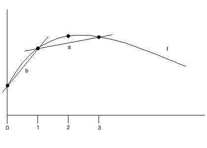

| Download version | 1.0 |
| Download licence | BSD |
| Trad4 version | 2.0.3 |
| Author | schevans |
| Date |
In this model we'll be applying trad4 to the problem of ordinary differential equations, again using numerical methods in a similar vein to heat_equation_1d. We'll define a function, and get the first and second order differentials of that function.
The diagram below shows the curve f and two lines a and b.

First, we're going to find the first differential at point x=2. This can be approximated using the centred difference method which gives us the slope of line a. This is given by:
df = ( f(x3) - f(x1) ) / ( x3 - x1)
The first differential at point x=0 can be approximated by the forwards difference method which gives us the slope of line b. The forward difference method is less accurate than the centred difference method for reasons discussed below, but for now, this is given by:
df = ( f(x1) - f(x0) ) / ( x1 - x0)
The first differential at the last point on the curve (not shown) is given by the backwards difference method. This is not show on the above diagram as it's essentially the same as the forwards difference method.
pub
double x
double y
sub
f f_down
f f_this
f f_up
pub
double df
double dx
sub
df df_down
df df_this
df df_up
pub
double d2f
sub
f my_f[NUM_NODES]
df my_df[NUM_NODES]
d2f my_d2f[NUM_NODES]
The need_refresh function in the trad4 internals explicitly lists each object to which any type subscribes. This has worked well until now, but presents a problem with the monitor and big graphs. As the monitor subscribes to 3*NUM_NODES object (as there are 3 tiers), big graphs, for example NUM_NODES=10k, mean a massive need_refresh function as 30k objects are listed in this function by the precompiler. This means for a long compile time and a big binary - monitor.o is 3meg. This doesn't actually affect run-time as because every object to which the monitor subscribes will have changed, lazy evaluation kicks in so only the first object needs to be tested.